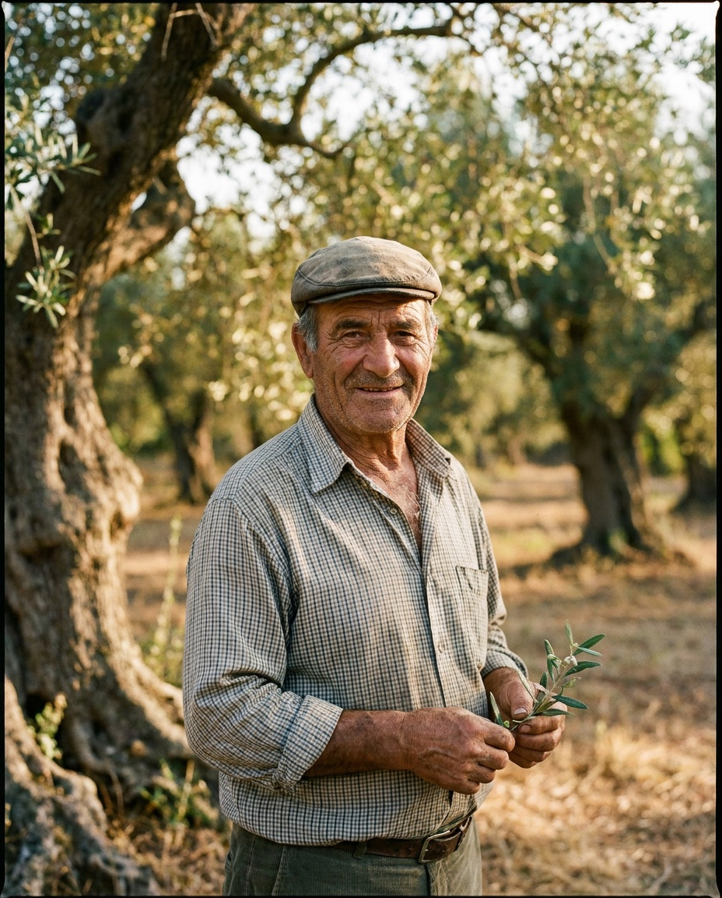
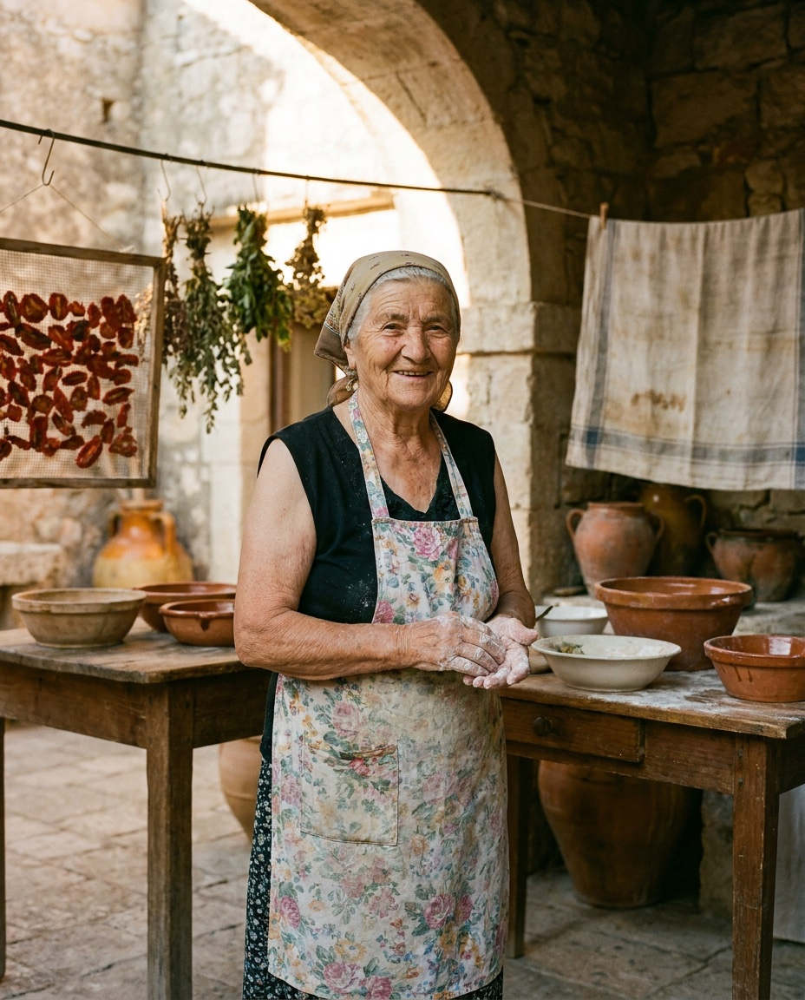
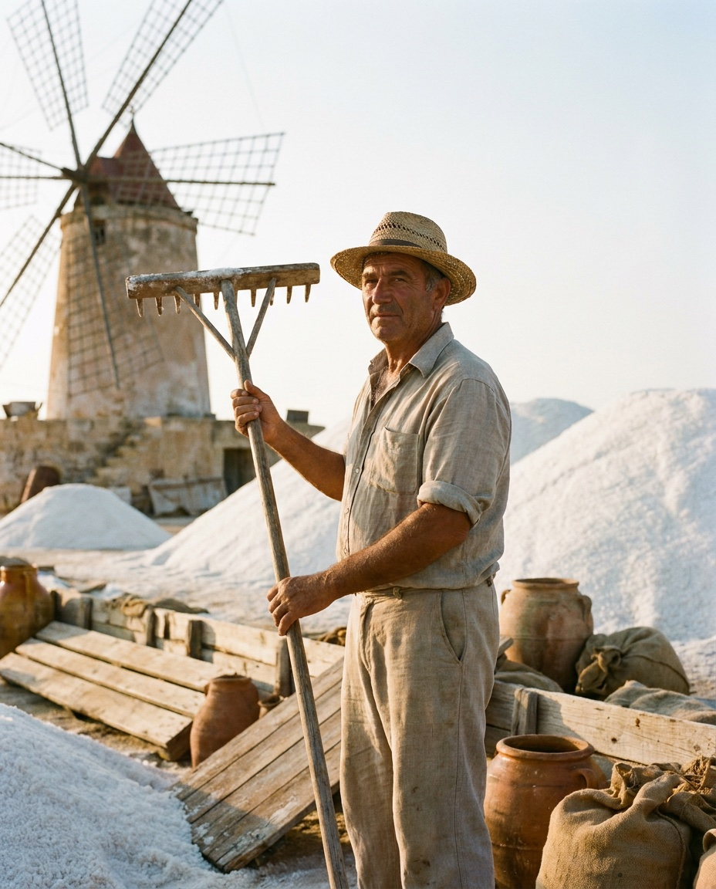

Seit 1962 · Palermo, Sizilien
Aus unserer Erde,
in eure Hände.
Echte Produkte von echten Familien. Keine Abkürzungen — nur Sonne, Salz und sizilianische Geduld.
Den Laden entdecken
Unsere Geschichte
Drei Generationen,
eine einzige Regel: es richtig machen.
Wir sind auf einem Markt in Palermo geboren, zwischen den Rufen der Händler und dem Duft von Zitrusfrüchten. Heute arbeiten wir mit zweiundzwanzig kleinen Erzeugerfamilien — vom Ätna bis zu den Salinen von Trapani — die noch anbauen wie früher.
Hinter jedem Glas, jeder Flasche, jeder Kiste Obst steht ein Name und ein Gesicht. Wer bei uns kauft, kauft bei ihnen.
Lernt die Erzeuger kennenDer Laden
Produkte der Saison
Unsere Leute
Die Gesichter hinter den Produkten
Turi
Olivenbauer · Castelvetrano
«Gutes Öl macht man mit den Füßen auf der Erde und schmutzigen Händen.»

Nonna Pina
Eingemachtes & 'Strattu · Noto
«Tomaten trocknet man in der Augustsonne. Das kann keine Maschine.»

Salvo
Salzbauer · Trapani
«Salz ist Wind, der zu Stein geworden ist. Wir sammeln ihn nur ein.»